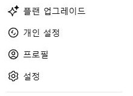
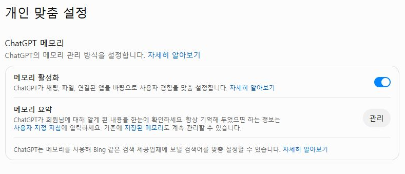
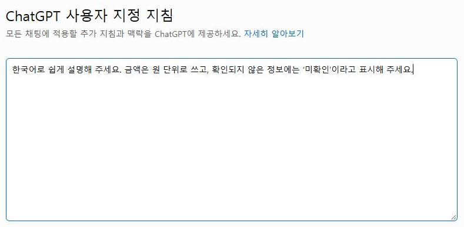

실제 조작 화면을 순서대로 연결했습니다. 아래 사진을 누르면 원본 크기로 열립니다.Bravo AI Life 기본 사용법 · 1차시로 돌아가기
STEP 06
모든 대화에 쓸 개인 지침과 메모리 구분하기
답변 방식으로 쓸 규칙과 이전 대화에서 참고할 정보를 구분합니다.
프로필 메뉴에서 설정 찾기
왼쪽 아래 프로필 메뉴를 열어 설정 → 개인 맞춤 설정으로 갑니다. 계정 이름을 입력할 필요는 없습니다.
메모리와 사용자 지정 지침 구분
메모리는 이전에 알려 준 정보를 참고하는 기능이고, 사용자 지정 지침은 내가 직접 적어 둔 답변 방식입니다. 한 번만 필요한 조건은 새 질문에, 한 프로젝트에서만 쓸 조건은 프로젝트 지침에 적으세요.

원하는 응답 방식을 한 문단으로 작성
ChatGPT 사용자 지정 지침에 넣을 문장을 적어 봅니다. 적용하려면 저장하고 새 대화에서 같은 질문을 시험하세요.

입력 원문·연습 문장
한국어로 쉽게 설명해 주세요. 금액은 원 단위로 쓰고, 확인되지 않은 정보에는 ‘미확인’이라고 표시해 주세요.